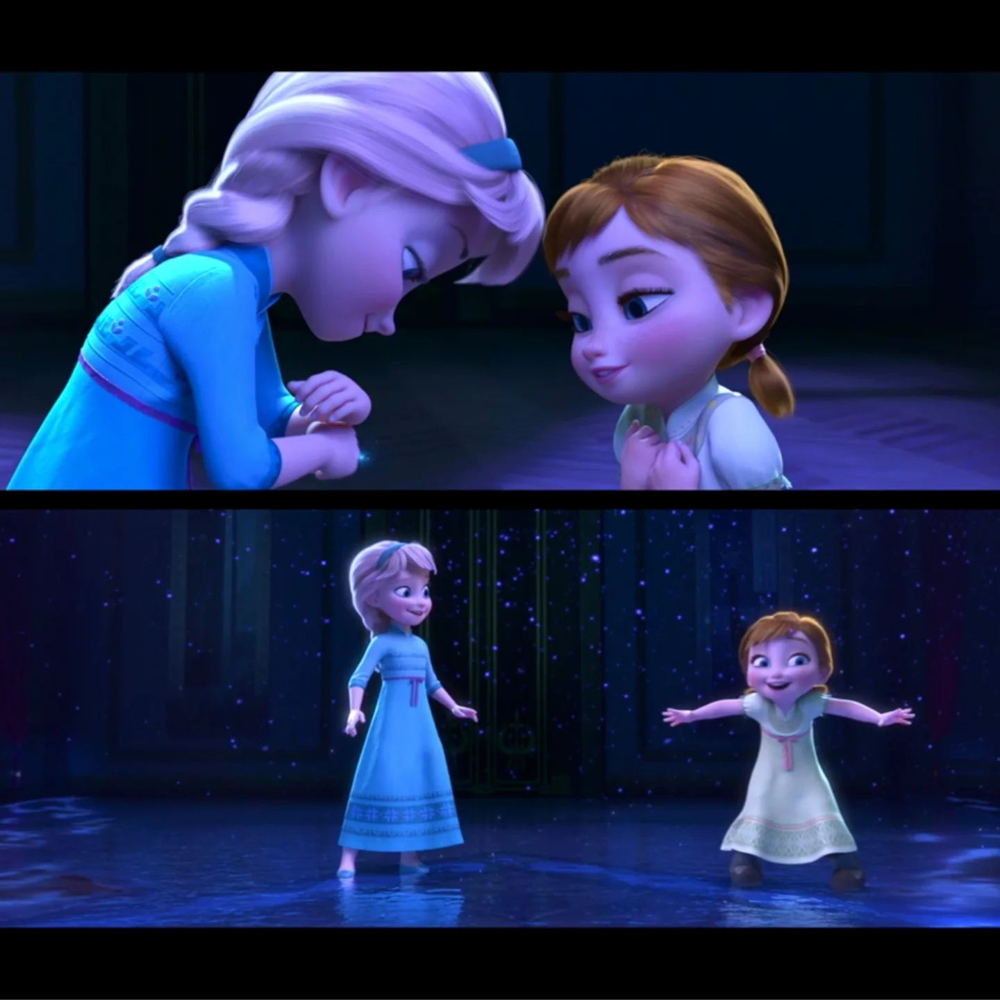

《冰雪奇缘》的核心并非传统"公主寻王子"，而是安娜与艾莎互相拯救、修复破裂关系的姐妹情。导演 Jennifer Lee 称电影关键突破在于把主角改为"拥有共同过去的姐妹"，解锁了整个故事。

""the heroine and the villain are sisters who share a common past" — 来源：《电影1艺术设定集》· 第 p.006
这份羁绊并非天然牢固，而是被"门"分隔、被恐惧侵蚀，又靠一次次主动靠近重新缝合。童年时的《Do You Want to Build a Snowman》把安娜的呼唤化为一段反复被拒的敲门——"Do you want to build a snowman?" 既是童真的游戏邀约，也是她试图穿越那道紧闭的门、把姐姐拉回共同世界的执拗。门后的沉默与门外的等待，正是姐妹分离的视觉母题：物理距离不远，情感却隔着重霜。
加冕日的《For the First Time in Forever》则用一首对唱写出同一时刻的两重孤独：安娜渴望与人相连、艾莎恐惧被人看穿，两人唱着同一句歌词却活在不同的恐惧里。这种"平行而错位"的声部，恰好说明羁绊的裂缝源于彼此都不敢先伸出手——而非不爱。
电影1的"真爱之举 (act of true love)"最终被证明是姐妹牺牲之爱而非浪漫之吻——安娜为艾莎挡剑冰封、汉斯的"true love's kiss"被证伪。Olaf 点题："Love is putting someone else's needs before yours."
""An act of true love will thaw a frozen heart." — 来源：《Frozen Junior Novel》· 引文片段（Olaf 终局点题）；《电影1艺术设定集》· 第 p.145
到《冰雪奇缘2》，安娜的行动力成为维系羁绊的关键引擎。当艾莎在暗海倒下、姐妹相隔千里，安娜没有等待救援，而是在《The Next Right Thing》中对自己说："I'll do the next right thing"——"一步一行"地划桨、前行、独自承担。这句歌词揭示安娜维系羁绊的方式：不是被动等待被拯救，而是以微小的、连续的行动把断裂的关系重新接起。她始终是那个翻雪山、驾船、推开冰门的人；羁绊因她的"动"而始终未断。
📌 高潮：安娜为艾莎挡下汉斯之剑、全身冰封——姐妹之爱破解咒语（电影1艺术设定集）。（来源：《电影1艺术设定集》· 第 p.147）
""I'll do the next right thing." — 来源：《Frozen 2》原声/剧本（《The Next Right Thing》）